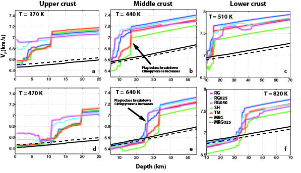
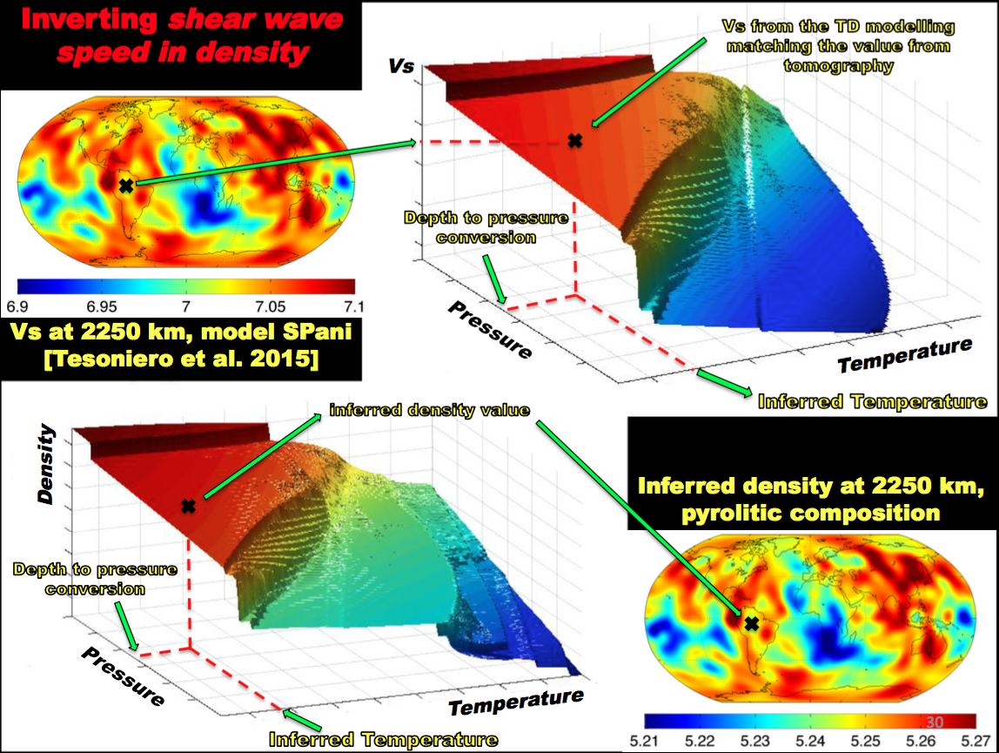
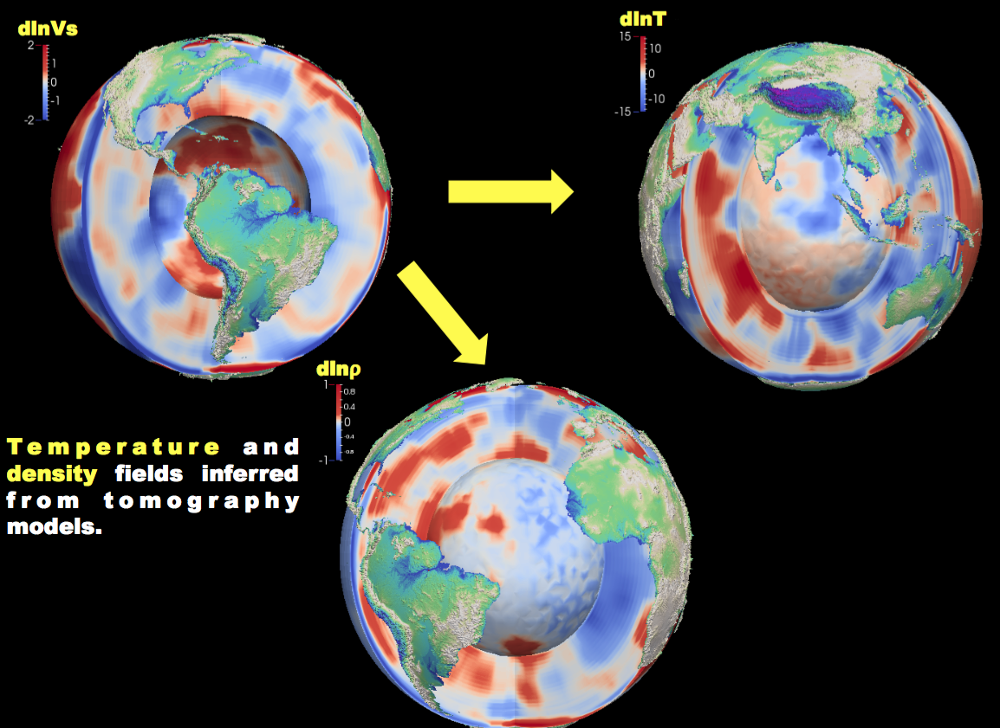
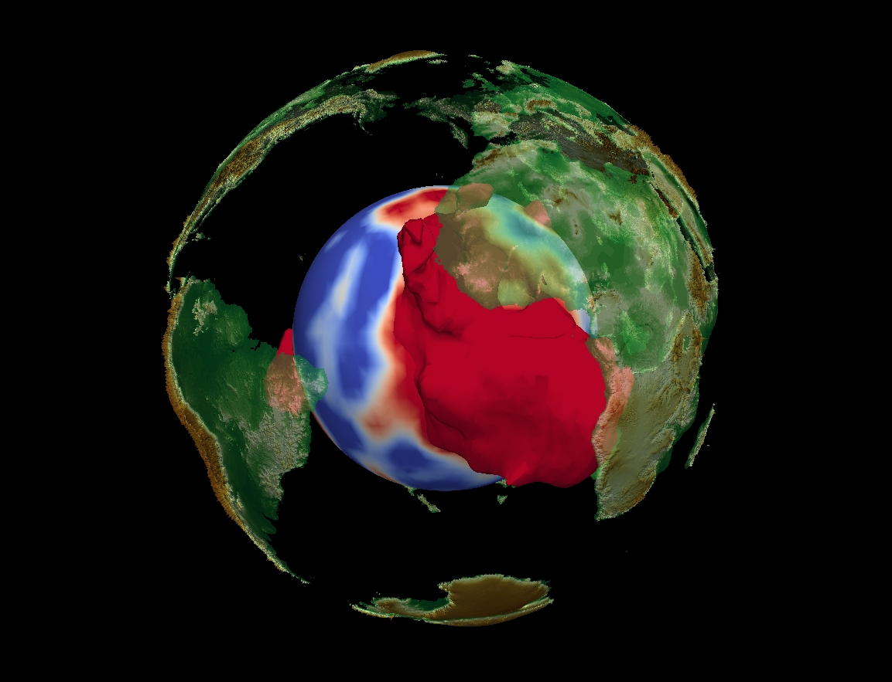
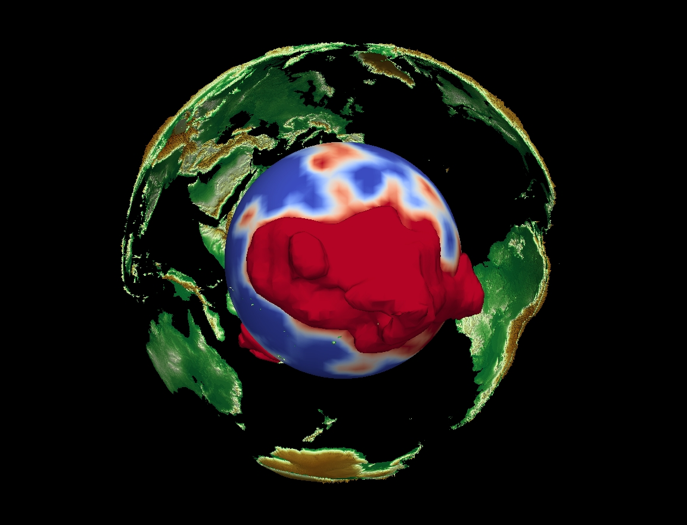

My research is geared toward understanding the Earth's thermal structure and chemical composition, with the ultimate goal of improving our knowledge regarding the processes driving the planet formation and evolution.
Continental crust
I focused on the effect of chemical composition on the physical properties of the continental crust, particularly taking into account the effect of temperature and the presence of H2O. The presence of water stabilizes hydrated phases that have a strong impact on physical properties. Check Guerri et al. [2015] for more details.

- 
Mantle physical properties and chemical composition
I investigate the mantle thermal structure and chemical composition. Forward modeling of mantle physical properties is performed assuming a compositional structure and using the thermodynamic modeling code Perple_X [Connolly, 2005; 2009]. Results are matched with 3D seismic tomography models. The procedure used to infer mantle temperature and density starting from a Vs model is detailed in the following figure.
- 
In this case, starting from a Vs model (SPani, Tesoniero et al. [2015]) and assuming a homogeneous pyrolitic composition, I inferred the mantle density and temperature. The thermodynamic modelling is performed with Perple_X adopting the thermodynamic dataset and formalism presented in Stixrude and Lithgow-Bertelloni (2005, 2011). More details in Guerri et al. [2016].
- 
The Earth's lower mantle is characterized by two regions of low seismic wave speed. They are known as LLSVPs (Large Low Shear Wave Velocity Provinces). They are localized one underneath Africa and one in the equatorial central Pacific Ocean. In the figure below they are represented as imaged by the model MEAN (Guerri et al. [2016]), considering the surface relative to a dlnVs of -1%. In Guerri et al. [2016] we point out how interpreting the Vp and the Vs components of the tomography model SPani (Tesoniero et al. [2015]) in terms of temperature, assuming a homogeneous chemical composition, leads to two significantly discordant temperature structures. Such a result potentially points towards chemical heterogeneities in the lower mantle, particularly in correspondence with the LLSVPs.
- 
- 
Assuming compositional heterogeneities in correspondence of the LLSVPs helps in reducing the discrepancy between observed and predicted geoid. I compute the synthetic geoid with the code StagYY (Tackley [2008]), developed by Paul Tackley (ETH, Zurich). Boundary deformation at the core mantle boundary and at the surface topography are taken into account in the geoid calculation.